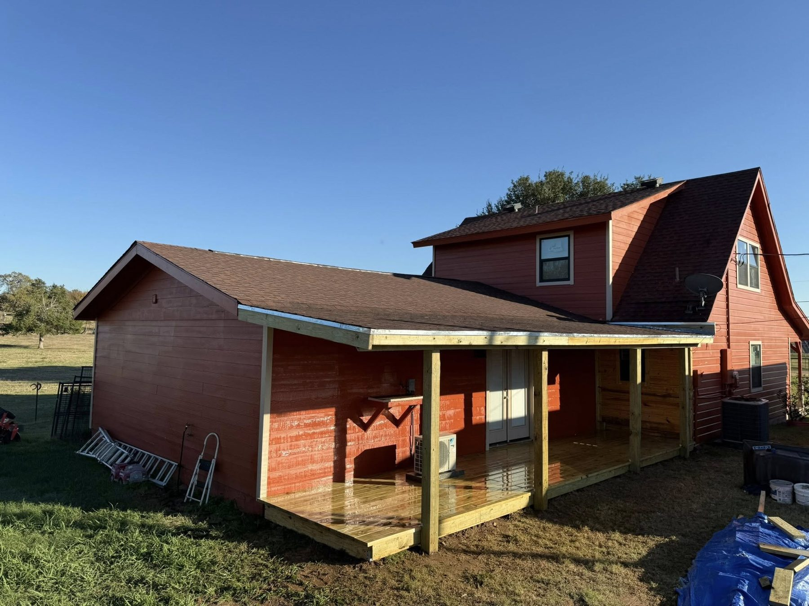

A good deck in Austin is designed around three things before anyone talks about boards or stain: where the sun is at 5 p.m., how the yard slopes, and how you want to use the space. Get those right and almost any material looks good. Get them wrong and even an expensive deck sits empty from June to September.
Here are the deck design ideas that work best in Austin-area backyards, with real examples from our own builds, what each one costs in 2026, and how to pick the right one for your yard. If you would rather click through options, our Design Builder on the homepage lets you pick a style, material and finish and send it to John in about 90 seconds.
Start with the sun, the slope and the soil
- Sun. West-facing backyards take the hardest late-afternoon sun, right when you want to be outside. Any deck on the west side of a house should be planned with shade, either a cover over part of it or a deck tucked into existing tree shade.
- Slope. A flat yard can take a simple ground-level deck. A yard that falls away from the house, common in the Hill Country and west Austin, is where decks earn their keep, because they turn unusable slope into flat living space.
- Soil. East of I-35, expansive clay moves footings around. West of it, limestone often sits a few inches down. Both change how the footings are built, which matters more to how long the deck lasts than any design choice.
1. The ground-level deck: simple, affordable, easy to use

A low deck a step or two off the back door is the most affordable way to add outdoor living space, and it is often the right answer for flat Austin yards. It reads as an extension of the house, needs fewer stairs, and on most lots it stays under the height where a guardrail is required. It is also a natural first phase: build the deck now, add a pergola or cover later.
2. The raised deck that turns a slope into a yard

When the yard drops away from the back door, a raised deck keeps you at floor level and gives you a view. The design work is in the details: stairs that land where you walk, a railing that does not block the view, and footings sized for the height. Decks more than 30 inches above grade need a guardrail, so the railing is part of the design from the start, not an afterthought.
3. Multi-level decks for big drops and big gatherings
On steep lots, one tall deck can feel like a balcony. Two or three levels stepping down the slope feel more like rooms: a dining level by the kitchen door, a lounging level a few steps down, and stairs to the yard from there. Multi-level decks also break up a large footprint so it does not look like a parking lot of boards.
4. The covered deck: the Austin favorite for good reason
A roof over at least part of the deck is what makes it usable in July. A solid cover blocks sun and rain, keeps the boards cooler, and protects the finish so you stain less often.
If a full roof is too much, a pergola over the seating area gives filtered shade at a lower cost. Our patio cover page and pergola cost guide cover both.
5. Wraparound and porch-style decks

A deck that wraps a corner of the house connects more doors to the outside and suits farmhouse and Hill Country styles. It also lets you follow the shade through the day: morning coffee on the east side, evenings on the side the house shades.
6. Decks built around something
Some of the best Austin decks are designed around a feature: a mature live oak, a pool edge, an outdoor kitchen, a fire pit, or a hot tub. Building around a tree means leaving room for the trunk and roots to grow.
A hot tub needs framing designed for the weight, which is far heavier than people. Tell us what you want the deck to hold before we design it, because it changes the structure underneath.
Have a picture in your head already? Send John a photo of the space and a screenshot of a deck you like. That is plenty to start a design and a quote.
Get a free deck design quote →Choosing the material
| Decking | Installed in Austin, per sq ft | Typical 300 sq ft deck | Best for |
|---|---|---|---|
| Pressure-treated pine | $30 to $45 | $9,000 to $13,500 | Big footprints and tighter budgets |
| Cedar | $50 to $75 | $15,000 to $22,500 | The warmest look in natural wood |
| Composite or PVC | $60 to $100 | $18,000 to $30,000 | Low maintenance, no staining |
Material choice shapes the look as much as the layout does. Pressure-treated pine can be stained almost any color. Cedar has the richest grain and goes silver if you leave it alone.
Composite comes in fixed colors and never needs stain. In full Austin sun, pick a light composite color: dark boards get noticeably hotter underfoot. Our Trex, TimberTech and Fiberon comparison goes deeper, and the Austin deck cost guide explains what moves the price.
Railing ideas that change the whole look

- Wood pickets. The classic, matched to the deck and easy to stain together.
- Cattle panel. Welded wire panels framed in wood. A Hill Country favorite that keeps the view open and costs less than most metal systems.
- Metal balusters. Thin black balusters in a wood frame give a clean, modern look with better sightlines than wood.
- Horizontal boards. A modern look that matches horizontal fences. On raised decks, the openings still have to meet code, so we size them to the rules that apply.
Stairs, lighting and the details people notice
- Wide stairs. A wider set of steps doubles as extra seating and makes the deck feel more generous.
- Picture-frame border. A border board around the edge hides cut ends and makes any material look finished.
- Lighting. Lights in stair risers and post caps make the deck usable after dark and safer on the stairs.
- Built-ins. Benches and planters can replace part of the railing on lower decks and save on furniture.
- Skirting. Closing in the space under a low deck keeps animals out and gives it a finished base.
How big should your deck be?
Size the deck around the furniture you will use, then add room to walk past it. A small bistro table and two chairs fit on about 100 square feet.
A dining table for six needs roughly 12 by 12 feet once the chairs are pulled out. A grill station plus a dining area and a couple of lounge chairs usually lands between 300 and 400 square feet, which is why so many of our Austin decks end up near that range.
Keep the deck in proportion to the house and the yard. A deck that eats the whole backyard leaves no grass for kids or dogs, and one that is too narrow turns into a hallway.
A good rule is to keep the main seating area at least 10 feet deep so chairs can push back from a table without hitting the railing. If you are not sure, tape out the shape on the ground and set your patio furniture inside it for a weekend.
Plan for permits and your HOA
Most attached and raised decks need a building permit, and most Austin-area HOAs review decks, covers and stain colors before work starts. We check which rules apply to your address and prepare the drawings and material details for the HOA. Our HOA approval guide explains the process and how long it usually takes.
How to pick the right design for your yard
- Stand where the deck would go at 5 p.m. in summer. If it is in full sun, plan shade.
- Decide how many people it needs to hold for the way you entertain, then add room to walk around the furniture.
- Pick the material by how much upkeep you want, not just the price.
- Save a few photos of decks you like and send them with a photo of your yard.
John walks every estimate himself, measures the space, and turns your ideas into a line-itemed quote. We build decks across greater Austin, including Cedar Park, Round Rock and Buda. See more of our work on our Austin decks page.
Deck design questions, answered
What is the best deck design for an Austin backyard?
The best design starts with the sun and the slope. A ground-level deck suits a flat yard, a raised or multi-level deck suits a slope, and in a west-facing yard, a covered deck or a pergola over the seating area is what makes it usable in summer.
How much does a new deck cost in Austin?
Installed decks in Austin cost $30 to $45 per square foot in pressure-treated pine, $50 to $75 in cedar and $60 to $100 in composite or PVC. A typical 300 square foot deck runs $9,000 to $13,500 in pine, $15,000 to $22,500 in cedar and $18,000 to $30,000 in composite.
What deck color is best for the Texas heat?
Lighter colors stay cooler underfoot. For composite decking in full Austin sun, choose from the lightest colors in the line, and add shade over the part of the deck you use most.
Should I add a cover or pergola to my deck?
In most Austin yards, yes, at least over part of it. A solid cover blocks sun and rain and protects the boards, while a pergola gives filtered shade at a lower cost. Footings for a future cover are easier to plan when the deck is built.
Do I need a railing on my deck?
Decks more than 30 inches above grade need a guardrail. Lower decks often do not, which lets you use wide steps, benches or planters along the edge instead.
Can you build a deck around a tree?
Yes. We leave room around the trunk for growth and keep footings clear of the main roots. Tell us about the tree before design starts, because it changes the framing.
Can I design my own deck online?
Yes. The Design Builder on our homepage lets you pick a deck style, material and finish, add photos of your space, and send it to John for a free quote.
Do I need HOA approval for a new deck?
Most Austin-area HOAs review new decks, covers and stain colors before work starts. We prepare the drawings and material details for the submission.
Prices on this page come from our own 2026 Austin-area quotes. Rules change, so we check which ones apply to your address before every build. New to a term? See our plain-English glossary.